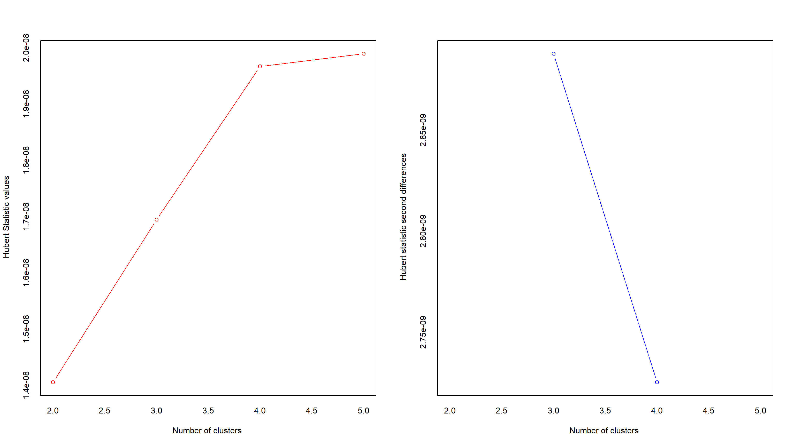
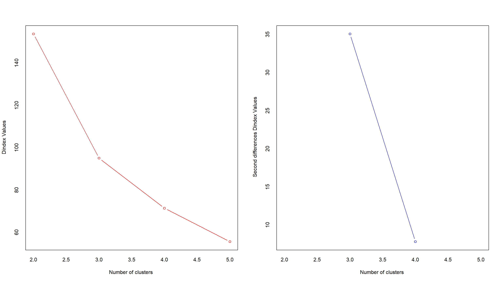
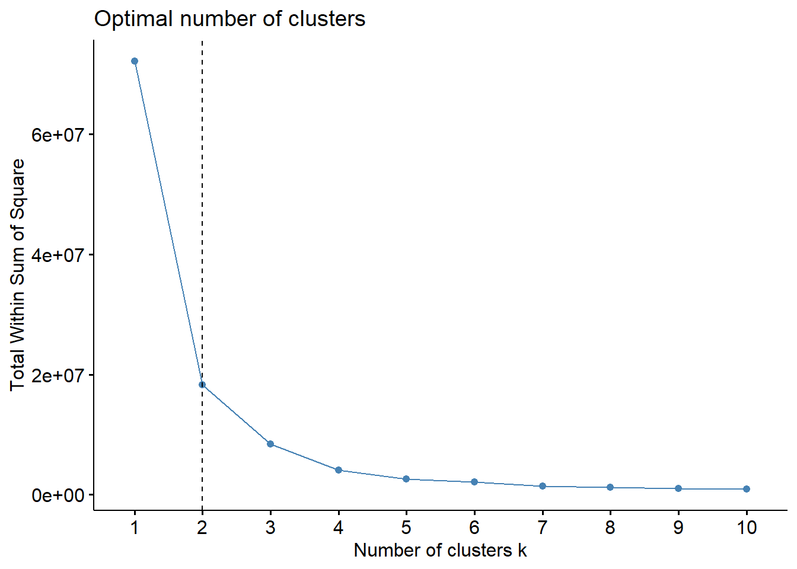
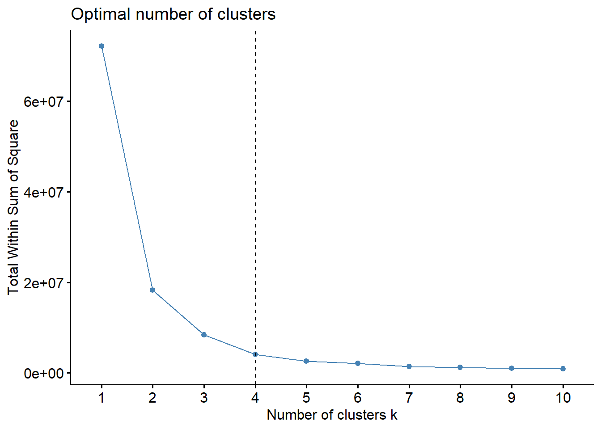
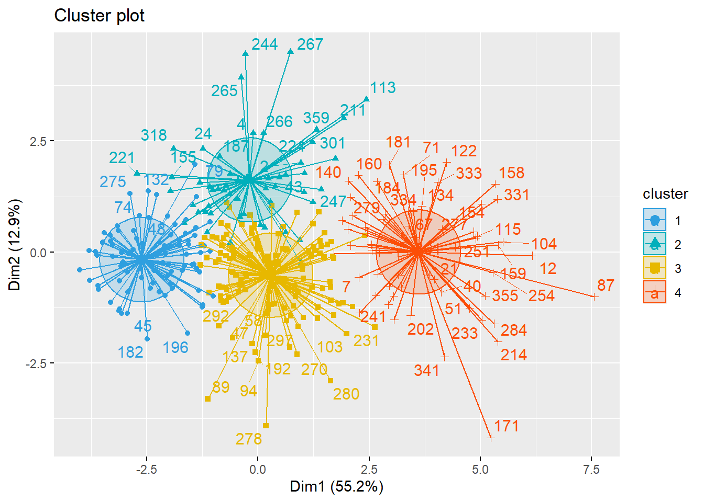

En la búsqueda de patrones, creemos oportuno probar la existencia de grupos diferenciados a partir de los indicadores básicos trabajados.
Se ha/n eliminado 20 outlier/s. Se muestran su datos más significativos.
Realizamos el análisis y listamos sus resultados. Nótese en la agenda de casos, que un número negativo significa referencia al caso original, mientras que un número positivo indica una referencia un grupo creado en el paso indicado por el número

## *** : The Hubert index is a graphical method of determining the number of clusters.
## In the plot of Hubert index, we seek a significant knee that corresponds to a
## significant increase of the value of the measure i.e the significant peak in Hubert
## index second differences plot.
## 
## *** : The D index is a graphical method of determining the number of clusters.
## In the plot of D index, we seek a significant knee (the significant peak in Dindex
## second differences plot) that corresponds to a significant increase of the value of
## the measure.
##
## *******************************************************************
## * Among all indices:
## * 10 proposed 2 as the best number of clusters
## * 2 proposed 3 as the best number of clusters
## * 8 proposed 4 as the best number of clusters
## * 5 proposed 5 as the best number of clusters
##
## ***** Conclusion *****
##
## * According to the majority rule, the best number of clusters is 2
##
##
## *******************************************************************Hacemos el análisis K-means para 2 grupos.
141, 223
Procedemos a unir las variables de pertenencia del K-means con el fichero original.
Perfilamos los grupos con otros datos del banco de datos. Hacemos la prueba Chisq para los datos nominales y la prueba T para los métricos.
Perfilamos los grupos con otros datos del banco de datos. Hacemos la prueba Chisq de celda para ver direcciones de dependencia en celdas significativas.
## Loading required package: ggplot2##
## Attaching package: 'ggplot2'## The following objects are masked from 'package:psych':
##
## %+%, alpha## The following object is masked from 'package:expss':
##
## vars## Welcome! Want to learn more? See two factoextra-related books at https://goo.gl/ve3WBa
## K-means clustering with 2 clusters of sizes 141, 223
##
## Cluster means:
## P1 P2 P4 P5B P17_1 P17_4 P17_5 P17_6 P17_7 P17_8
## 1 7.092199 7.219858 7.638298 6.815603 7.319149 6.269504 6.801418 7.304965 6.262411 5.418440
## 2 8.699552 8.869955 9.183857 8.654709 8.977578 8.556054 8.726457 8.860987 8.484305 8.156951
##
## Clustering vector:
## [1] 2 1 2 1 2 2 1 2 2 1 1 1 2 1 1 2 1 2 1 1 1 1 2 2 2 2 2 2 2 2 2 1 1 2 2 2 2 2 2 1 2 2 1 1 2 2 2 2 2 1 1 1 1 1 1 2 2 2 2 2 2 2 1 2 2 1 1 2 1 2 1 2 2 2 2 2 2 2 2 2 2 2 2 1 2 2 1 2 2 2 2 2 2 2 2 2 2 2 2 2 2 2 1 1 2 2 1 2 1 2 2 2 1 1 1 1 1 2 1 1 2 1 2 2 1 2 1 2 2 1 2 2 2 1 2 1 2 1 2 1 2 1 1 2 1 2 1 2 1 2 1 2 2 1 2 2 1 1 1 1 1 2 2 1 2 2 2 1 2 2 1 2 2 1 1 2 2 2 2 1 1 2 2 1 2 2 2 2 2 2 1 2 2 2 1 2 2 2 2 1 2 1 2 2 2 1 2 1 1 1 1 2 2 1 2 1 2 1 1 2 2 2 2 1 1 2 2 2 1 2 1 2 1 2 2 1 2 2 1 2 1 2 1 1 1 2 1 1 1 2 1 2 2 1 2 1 2 2 2 1 1 2 2 2 1 1 1 2 2 2 2 2 2 2 2 2 1 2 1 1 2 1 1 1 1 2 2 2 2 2 1 2 2 2 2 1 2 2 2 1 1 2 1 2 2 2 1 1 1 1 2 2 2 2 2 2 2 2 2 2 2 1 1 2 1 1 1 2 2 2 1 1 1 1 2 2 2 2 2 2 1 2 2 2 2 2 2 1 1 1 1 2 2 1 1 1 2 2 1 2 1 2 1 2
##
## Within cluster sum of squares by cluster:
## [1] 3176.071 2932.117
## (between_SS / total_SS = 34.7 %)
##
## Available components:
##
## [1] "cluster" "centers" "totss" "withinss" "tot.withinss" "betweenss" "size" "iter" "ifault"## Warning: ggrepel: 289 unlabeled data points (too many overlaps). Consider increasing max.overlapsHacemos el análisis K-means para4 grupos.
106, 54, 135, 69
Procedemos a unir las variables de pertenencia del K-means con el fichero original.
Perfilamos los grupos con otros datos del banco de datos. Hacemos la prueba Chisq para los datos nominales y la prueba T para los métricos.
Perfilamos los grupos con otros datos del banco de datos. Hacemos la prueba Chisq de celda para ver direcciones de dependencia en celdas significativas.

## K-means clustering with 4 clusters of sizes 106, 54, 135, 69
##
## Cluster means:
## P1 P2 P4 P5B P17_1 P17_4 P17_5 P17_6 P17_7 P17_8
## 1 9.254717 9.528302 9.622642 9.207547 9.566038 8.915094 9.311321 9.367925 9.056604 9.056604
## 2 8.851852 9.055556 9.481481 8.388889 8.685185 7.259259 7.962963 8.370370 6.388889 4.370370
## 3 7.703704 7.748148 8.296296 7.740741 8.051852 7.829630 7.859259 8.118519 7.955556 7.696296
## 4 6.391304 6.536232 6.855072 6.043478 6.724638 5.768116 6.188406 6.739130 5.739130 5.043478
##
## Clustering vector:
## [1] 1 2 1 2 3 1 4 3 3 3 2 4 1 3 3 1 2 1 3 2 4 2 1 2 2 3 2 1 1 1 1 4 3 3 2 1 1 3 1 4 3 1 2 2 1 3 3 1 1 4 4 4 3 4 3 2 3 3 1 1 3 3 4 3 3 3 4 1 4 1 4 1 3 1 1 1 3 3 1 2 1 1 1 3 3 1 4 1 3 3 3 1 1 3 3 1 1 3 3 3 1 3 3 4 3 1 3 1 3 1 3 3 2 3 4 3 3 1 4 4 2 4 3 1 4 3 4 1 3 2 1 1 3 4 3 4 3 2 3 4 1 2 3 1 3 1 2 1 3 3 4 1 3 4 2 3 3 4 4 4 2 1 1 3 3 3 3 3 2 1 4 2 1 4 4 1 1 3 1 4 4 1 3 4 3 1 2 3 1 1 3 3 1 1 4 1 3 1 1 3 2 4 2 1 3 4 1 2 4 3 2 2 2 4 1 4 1 3 3 1 2 3 2 2 4 3 3 3 4 1 3 1 4 3 1 3 3 3 3 3 4 1 4 2 3 1 2 4 3 1 4 3 1 4 1 4 3 3 3 4 4 1 1 3 2 2 2 3 1 3 3 1 1 1 1 2 4 3 4 3 1 4 2 4 4 1 1 2 1 3 3 3 1 1 1 2 3 3 2 3 2 1 3 1 3 3 4 4 4 2 2 3 3 3 1 1 1 2 1 1 1 2 3 3 3 4 4 3 3 1 4 3 4 4 3 3 1 2 3 3 4 1 3 2 3 3 3 3 3 4 3 2 1 3 4 3 1 3 2 2 4 3 3 3
##
## Within cluster sum of squares by cluster:
## [1] 819.8491 983.9259 1492.0889 1217.1014
## (between_SS / total_SS = 51.8 %)
##
## Available components:
##
## [1] "cluster" "centers" "totss" "withinss" "tot.withinss" "betweenss" "size" "iter" "ifault"## Warning: ggrepel: 289 unlabeled data points (too many overlaps). Consider increasing max.overlaps